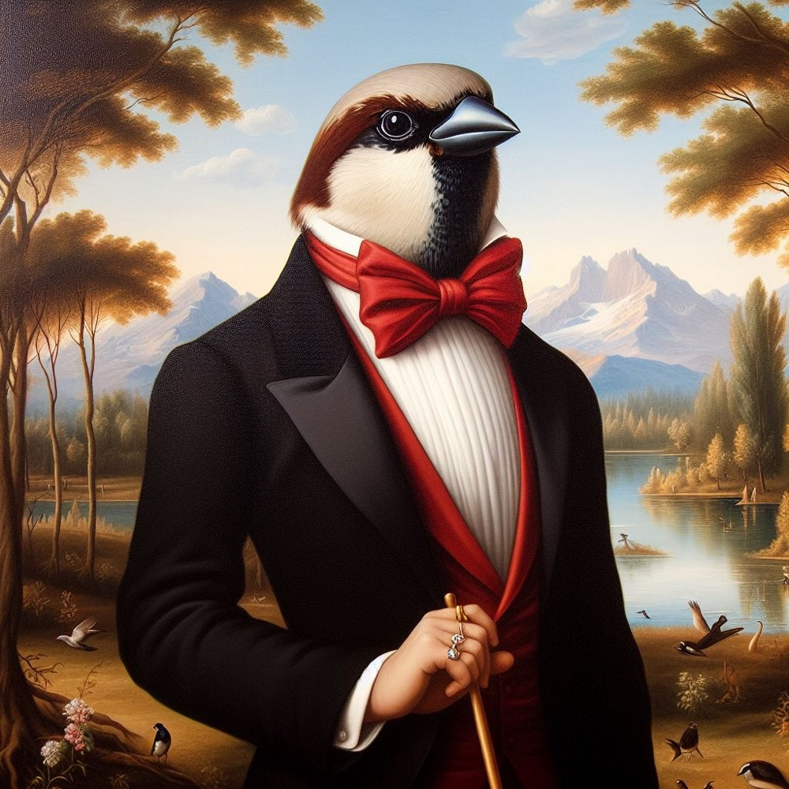
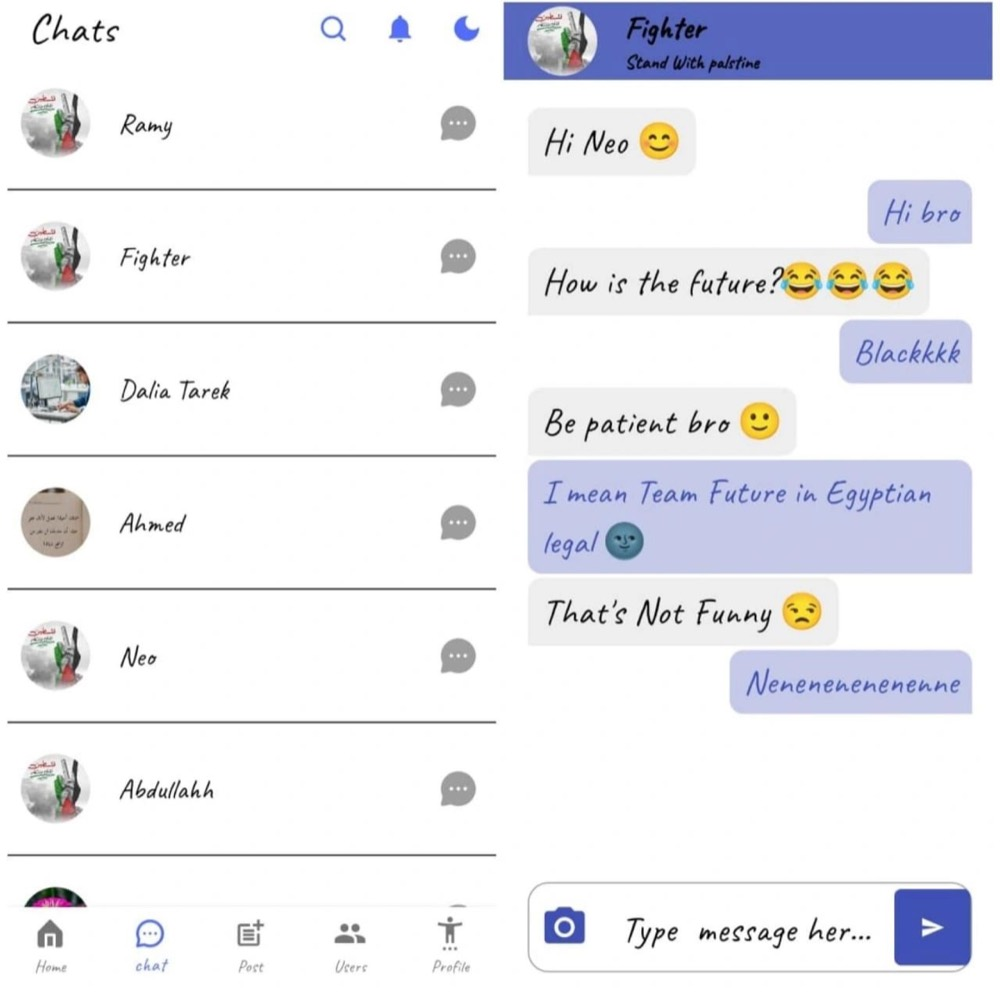
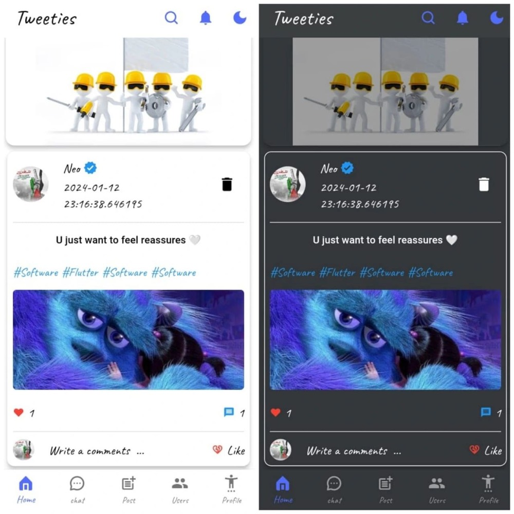
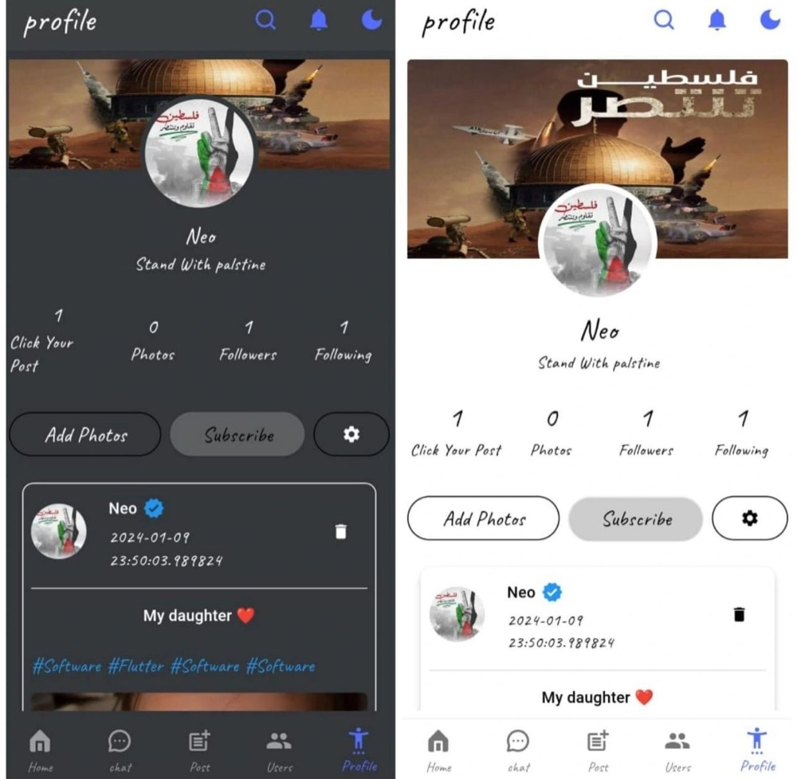

Tweety is a real-time social app for sharing moments, sparking conversations and staying connected — a news feed, posts, likes, comments, direct messaging and rich profiles, all in your pocket.

Tweety brings the essentials of modern social media into one clean, fast Flutter experience. People create an account, personalise a profile with an avatar, cover and bio, then post text and photos to a shared feed. Every post can be liked and discussed through threaded comments, while private one-to-one chats keep conversations flowing in real time.

The things that make Tweety pleasant to use are the same things that make it dependable under the hood.
Feeds, chats and comments update live through Cloud Firestore streams — no manual refreshing, no stale content.
Firebase Authentication with email & password, an email-verification flow and Firebase App Check protecting the backend.
Consistent theming, a smooth onboarding carousel, iconography and toast feedback for a refined feel.
Network status is monitored, with a dedicated offline screen so users always know where they stand.
Clean separation of modules, models, cubits and services makes the codebase easy to extend and maintain.
Upload profile pictures, cover photos, post images and in-chat images straight to Firebase Storage.
Every capability below is implemented in the app's source — grouped by module.
A shared timeline of posts from every member, each showing the author, avatar, timestamp, text and optional photo, with live like and comment counts.
Compose a post with text and an image picked from the gallery; media uploads to Firebase Storage before publishing.
Tap to like any post. Likes are stored per user in a sub-collection and counted in real time.
Open a comment dialog to add threaded comments to a post, with author name, avatar and time — and delete your own.
One-to-one real-time chat with text and image messages, mirrored to both inboxes and auto-scrolled to the newest reply.
Browse everyone on Tweety and jump straight into a profile or a conversation.
Find people quickly and open their public profile to view posts and start chatting.
Personalise your identity with an avatar, cover image, name and bio; edits propagate to your existing posts.
A guided intro carousel, register, login, password visibility toggle and email verification.
The journey a member takes through Tweety, straight from the app's navigation.
Meet Tweety through the intro carousel, create an account and verify your email.
Add an avatar, cover photo and bio so your flock knows who you are.
Share text and photos to the feed, then like and comment on what others post.
Find people, open a real-time chat and keep the conversation going.
Tweety is a peer social network — access is governed by authentication and data ownership rules rather than tiered admin roles.
Unauthenticated visitor.
Authenticated user (the core role).
Enforced by data ownership.
uIdA layered Flutter architecture with reactive state and a Firebase backend.
UI widgets dispatch to Cubits → Cubits talk to Firebase & local services → new state streams back to the UI via BlocConsumer.
Detected directly from the project's pubspec.yaml dependencies.
Cross-platform UI toolkit (Material Design).
SDK >=3.0.6 <4.0.0.
HTTP client for REST endpoints.
Network status monitoring.
Firebase initialisation.
Email & password authentication.
Real-time NoSQL database.
Image & media storage.
Backend abuse protection.
Push notifications (in stack, prepared).
Cubit-based state management.
Key-value local cache (session & theme).
Local SQL storage (in stack).
Date & time formatting.
Pick photos from the gallery.
Onboarding & media carousels.
Onboarding page dots.
Icon sets & toasts (fluttertoast, flushbar).
Security is handled by Firebase's managed services plus in-app checks.
Every session is gated by Firebase Authentication; a cached uId decides whether the app opens the feed or the login screen.
FirebaseAppCheck is activated at startup to help ensure requests originate from your genuine app.
Accounts carry an isEmailverified flag with a dedicated verification screen and resend action.
Deletes and profile edits are scoped to the signed-in user's identity, so members only mutate their own content.
Password fields are obscured by default with a show/hide toggle on login and register.
Connectivity is checked before launch and a dedicated no-internet screen prevents broken states.
Tweety uses Flutter's directionality and the intl package for locale-aware date and time formatting, with an explicit text direction set at the app root — a solid foundation for full localization.
Text direction is configured at the MaterialApp root.
Human-friendly timestamps on posts, comments and chats.
A bundled custom font family ships with the app assets.
The app ships with an in-app notifications screen, and Firebase Cloud Messaging is included in the stack and wired for foreground, background and tap-to-open handling.
A dedicated space for activity and updates.
FCM integrated in the stack; message handlers are prepared in code.
Instant in-app confirmations via fluttertoast & flushbar.
A snapshot of what makes up the Tweety codebase.
Real screens from the app. Filter by area, then click any screen — use ← → and Esc in the lightbox.
Tweety is a Flutter application targeting Android and iOS (with desktop & web build folders present). Light and dark themes are designed in, media is uploaded and served through Firebase, and the entire experience is driven by reactive Cubit state.



The essentials about how Tweety is built and what it does.
Tweety is a Flutter (Dart) mobile app using the BLoC/Cubit pattern for state, with Firebase providing authentication, a Cloud Firestore database, media storage, App Check and messaging.
Yes. Direct messages and the feed use Cloud Firestore snapshot streams, so new content appears instantly without manual refresh. Chats also auto-scroll to the latest message.
Members register and sign in with email and password through Firebase Authentication. An email-verification flow is included, and a cached user id determines whether the app opens straight into the feed.
Both light and dark themes are defined in the app's theme layer, complete with matching app bars, navigation and typography, and appear throughout the screenshots.
Firebase Cloud Messaging is included in the stack and the message handlers are prepared in code, alongside a live in-app notifications screen. We describe FCM honestly as prepared rather than fully live.
Connectivity is checked at launch using connectivity_plus, and a dedicated no-internet screen is shown so users always understand the app's state.
Indicative placeholder pricing for presentation purposes — the app itself ships with no billing integration.
Placeholder pricing — not implemented in the application.
Explore the screens, dive into the documentation, or reach out to talk about the build.
Questions about the product, the architecture or a collaboration? Send a message and we'll get back to you.